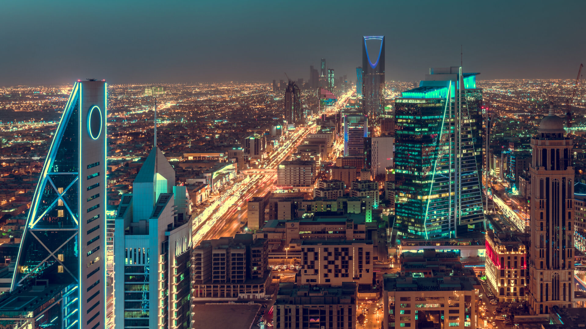

 The city is located in the Minṭaqat Al-Riyāḍ, one of the country’s 13 provinces, and is situated in the central portions of both the country and the larger Arabian Peninsula. Few of the world’s cities have transformed as rapidly as Riyadh, which grew from a small, fortified desert village in the 17th century into a modern metropolis of several million inhabitants in the 20th century. Area city, 600 square miles (1,550 square km). Pop. (2010) 5,188,286.
The history of Riyadh dates back several centuries. The city was established in the Yamāmah region on the ruins of the old city of Ḥajr, which long served as a centre for the trading caravans that traversed the various parts of the Arabian Peninsula. Surrounded by many valleys, the development of the city was enhanced by numerous wells, palm groves, and green areas.
you can vist this web page to more information click here